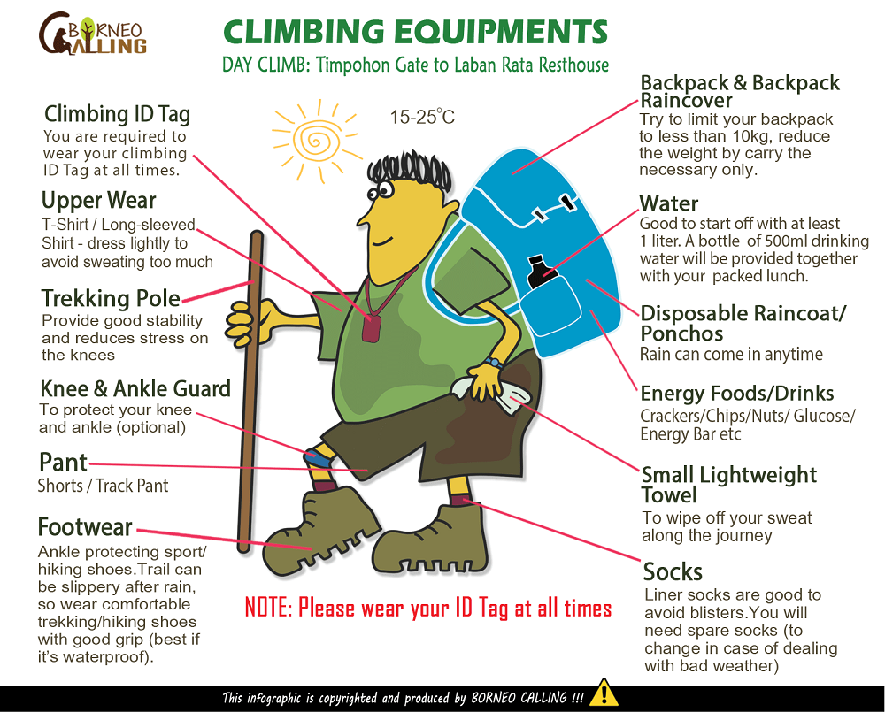

What you prefer to wear on the trail is really a matter of personal preference – it’s all up to you.
The climbing equipment you need during your DAY CLIMB

NIGHT CLIMB
Panabalan to Low’s Peak (Cold & Windy)
The night climb usually is cold and windy.
Hence, we strongly recommend that you wear in layers as layering is an excellent way to ensure
your comfort on the mountain and keep your body warm.
The base layer allows evaporation of moisture produced by your skin.
The insulated layer traps the warmth produced by your body and protects you from the cold.
The protective layer shields you from the wind and rain.
The base layer allows evaporation of moisture produced by your skin.
The insulated layer traps the warmth produced by your body and protects you from the cold.
The protective layer shields you from the wind and rain.
The climbing equipments for your night climb are different from day climb.